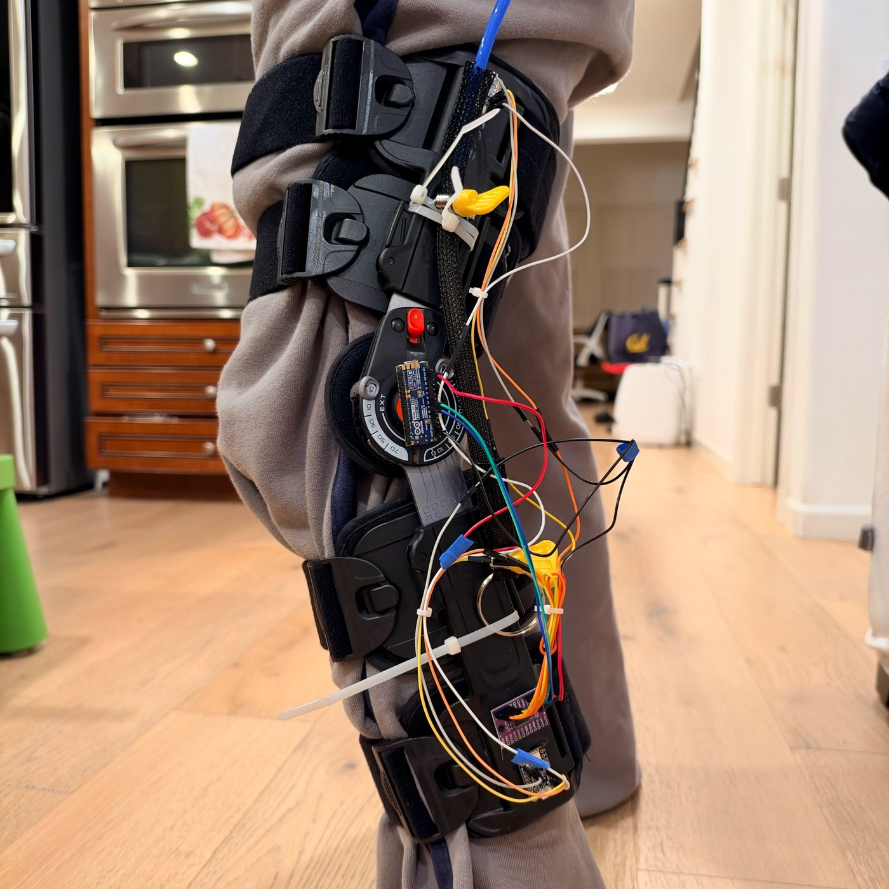
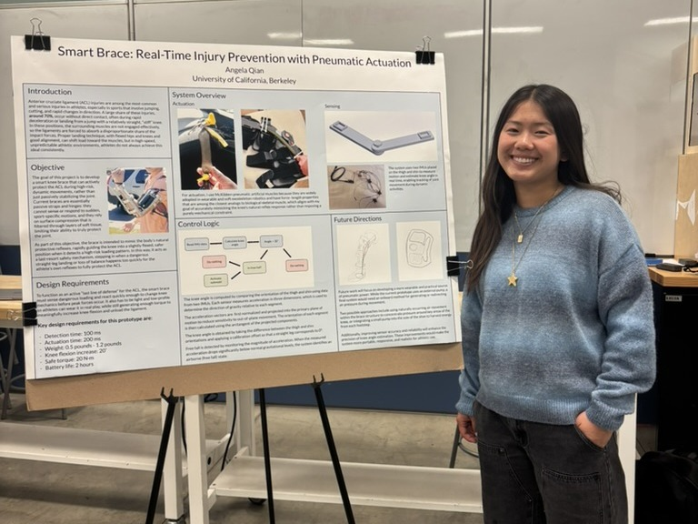
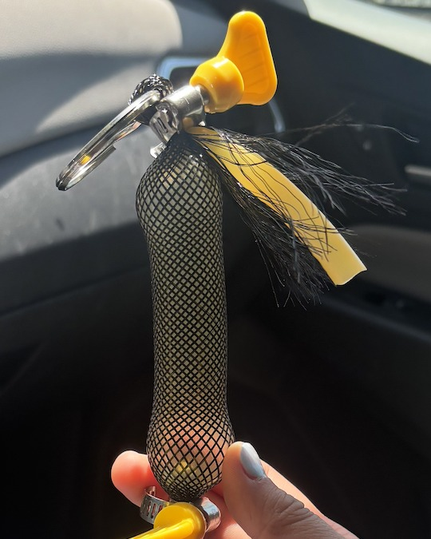
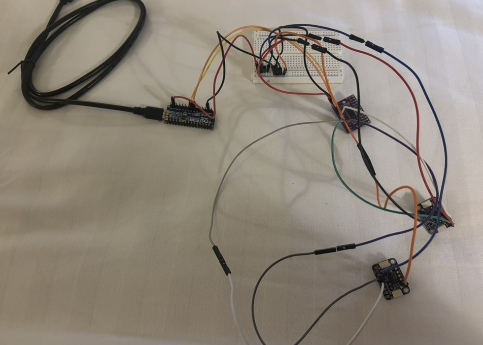
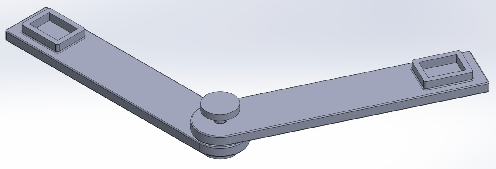

Active knee brace for ACL injury prevention
2026 · Independent project, Jacobs Institute Spark Grant
A lot of ACL tears happen when someone lands on a nearly straight leg. I'm building a brace that notices when that's about to happen and bends the knee before impact. It was one of five projects funded by Berkeley's Jacobs Institute Spark Grant.
I started by setting requirements from landing biomechanics: detect in 100 ms, actuate in 200 ms, add 20° of flexion and stay under 20 N·m of torque. Two IMUs on the thigh and shin feed an Arduino Nano 33 BLE over I²C, which estimates knee angle and flags a free fall with the knee bent less than 30°. For the actuator I made McKibben air muscles from silicone tubing and braided sleeving, because they pull a lot like real muscle.
Detection runs in about 40 ms, well under the 100 ms target. Actuation took about 500 ms, more than double my 200 ms goal. The tubing was too narrow, so air took too long to fill the muscle.
Next: wider tubing to speed up actuation, wiring the valve so it fires automatically, and drop tests at known angles to check detection accuracy. I'm also still working out the air source. The options I'm weighing are a CO₂ cartridge, a small pressurized tank, or a shoe pump that refills a tank as you walk.